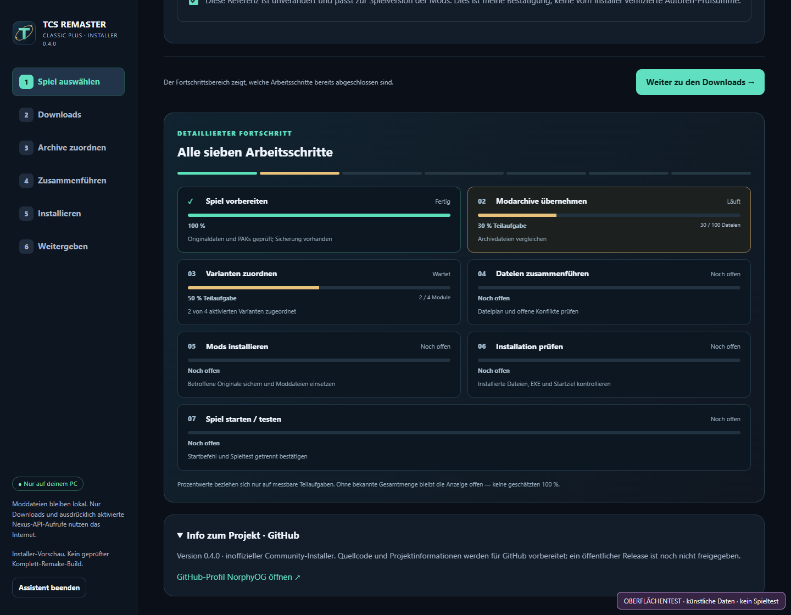

EINRICHTEN → LADEN → PRÜFEN → SPIELEN TESTEN
Dein Modpack.
Jeder Schritt sichtbar.
Sieben getrennte Fortschrittsstufen, richtige Downloadkarten und sichere Zuordnung. Der Installer setzt Dateien erst nach Prüfung ein und öffnet anschließend genau deinen ausgewählten Spielbuild.
STARTEN.cmd öffnenVorhandenen Installer aktualisierenÖffnet dein Browser CMD-Dateien nicht direkt? Im entpackten Ordner STARTEN.cmd doppelklicken. Die HTML ist nur die Anleitung. Nichts läuft ohne gestarteten lokalen Assistenten.
Du hast schon Version 0.3.x?
Alten Assistenten und das Spiel schließen. Diese neue ZIP separat entpacken. Dann die neue UPDATE.cmd starten und deinen alten Installerordner auswählen — nicht die Steam-Spielkopie.
UPDATE.cmd öffnenDownloads, Einstellungen, .local, .runtime und Sicherungen bleiben erhalten. Keine DATs oder DLLs löschen. Vorbereitete Daten werden wiedererkannt.
So läuft die Installation
Spiel auswählen und Automatik freigebenIm Assistenten die eigene TCS-Kopie auswählen. Werkzeugdownload und kontrollierte Modzuordnung bestätigen. „Vorbereiten + automatisch installieren“ starten.
Die richtige Datei herunterladen„Nächste fehlende Datei öffnen“ benutzen. Nexus öffnet sich im normalen Browser mit deinem bisherigen Login. Du bestätigst den Download.
Der Installer übernimmtDownloads und mods werden nach Aktivierung beobachtet. Archive vollständig liegen lassen, nicht selbst entpacken. Eindeutige Standardvarianten werden zugeordnet.
Nur echte Unklarheiten prüfenBekannte Dateiüberschneidungen werden automatisch abgeglichen, ohne einzelne Variantenklicks. Unbekannte Fassungen stoppen mit Prüfbericht. Ein optionaler Vader-Patch bleibt optional und ist nicht der Additional-Levels-Patch.
Dateien prüfen und Spiel startenNach Installation jede Moddatei mit dem Journal vergleichen. „Geprüften Build starten“ öffnet die Original-EXE im gewählten Ordner. Erst nach Kontrolle im Spiel den eigenen Spieltest bestätigen.
Getrennte Fortschritte statt falscher 100 %

Oberflächenaufnahme mit künstlichen Testdaten. Prozentwerte gelten nur für die benannte messbare Teilaufgabe; ohne Gesamtmenge wird keine Zahl erfunden.
Original-Downloads griffbereit
Am einfachsten im laufenden Assistenten öffnen: Er kennt, was dir noch fehlt. Diese Links sind die Offline-Alternative. Standard und optionale Ergänzungen nicht verwechseln.
Ohne Premium bleiben die Downloadbestätigungen auf Nexus. Keine fremden Modarchive werden mit dieser ZIP verteilt. Autorenhinweise und Rechte gelten weiterhin.
Eigenes Fenster
STARTEN.cmd nutzt ein separates Edge-/Chrome-Appfenster. Der lokale Dienst bleibt erforderlich. IM_BROWSER.cmd öffnet alternativ den normalen Browser. START_SPIEL.cmd prüft einen installierten Build und startet dessen EXE.
Projekt auf GitHub
Quellcode, Anleitung, Tests und eigene Bilder sind öffentlich. Unter „Weitergeben“ entsteht ein bereinigtes Installer-ZIP. Spiel und Mods müssen die Nutzer selbst beziehen.
Repository öffnen →Der Nutzer hat eine Installation mit Mods im Spiel bestätigt. Code- und Oberflächentests verwenden künstliche Daten; weitere Modvarianten, Nexus-Kontofunktionen und die vollständige Playtest-Checkliste bleiben offen. ReShade-/ASI-Runtimes erfordern eine eigene Einrichtung. Kein vollständiges Grafik-Remake.